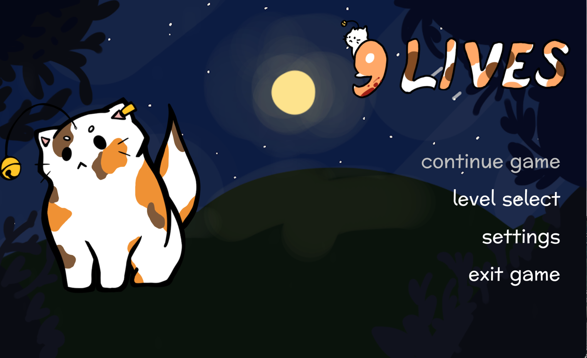
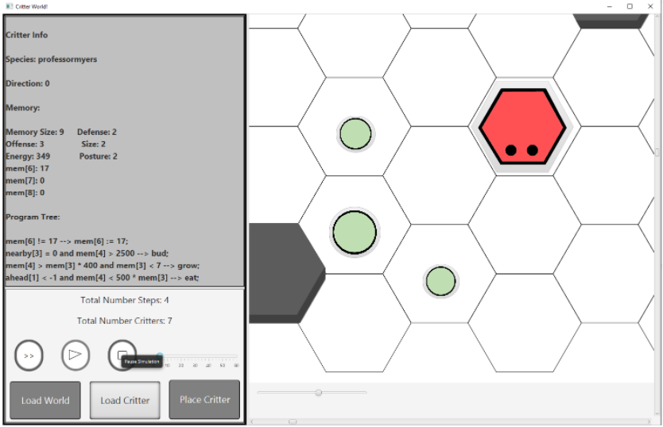

Projects

SweetRush
A full-stack multiplayer cooperative dessert cooking game. Players work together in real-time kitchen sessions, fulfilling timed customer orders as a team.
Built matchmaking, lobby coordination, and real-time order sync systems using WebSockets, with reconnect handling to ensure consistent gameplay across distributed sessions.

Nine Lives
A puzzle platformer game with character abilities, cross-platform compatibility, and a user-friendly level editor for player-generated content.
Created with a team using Java LibGDX, with a focus on polished gameplay feel, integrated visuals, and a full showcase release.

Critter World
A networked Java simulation of critters that wander, eat, reproduce, and evolve on a hexagonal grid — managed as a multi-user networked service with a graphical frontend.
Multiple users can view and interact with the same virtual world simultaneously, with energy-based survival mechanics and emergent evolution.